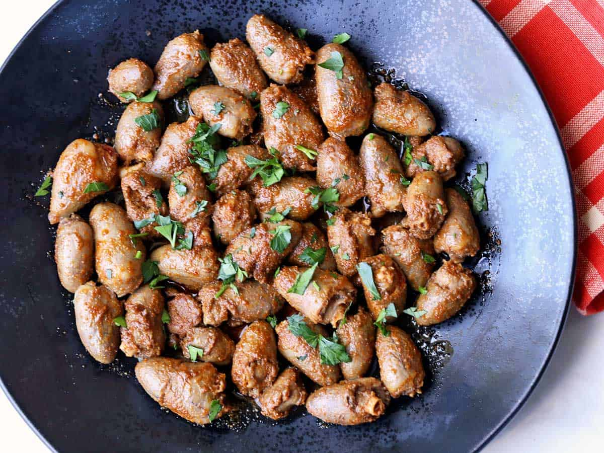

Chicken Hearts Recipe

Dr Lecter's "popcorn" on movie nights
Chicken hearts are small and delicate,
and they're ready fast, making them ideal for a quick movie night snacks.
Sprinkle them with spices, pan-fry them for five minutes, and Dr. Lecter's munchies is ready!
Ingredients
- Raw chicken hearts
- Olive oil
- Kosher salt and black pepper
- Spices (garlic powder, onion powder, smoked paprika, and ground cumin)
- Parsley
Steps
- In a large bowl, mix the hearts with the oil and spices.
- Cook them in a large skillet, stirring often, until cooked through. This should take about 5-7 minutes over medium-high heat.
- Once done, transfer them to plates, and pour the tasty pan juices on top.
Return to home